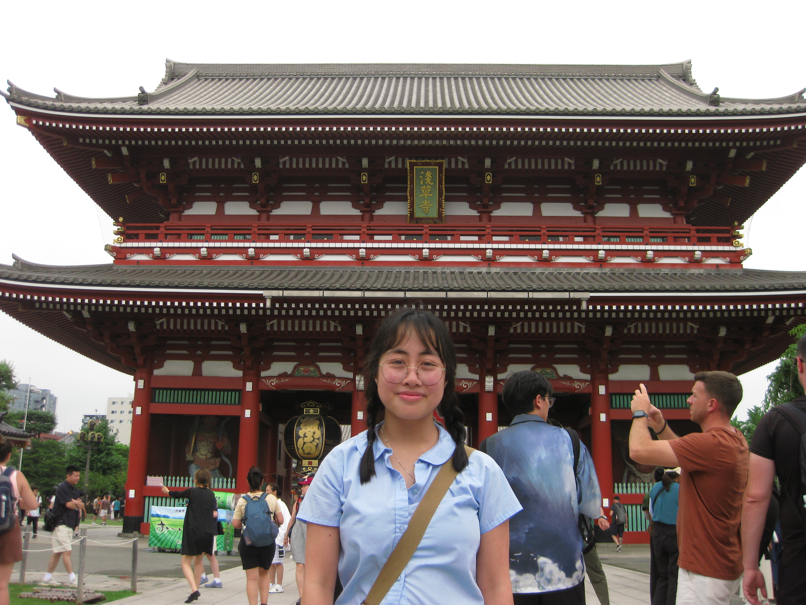
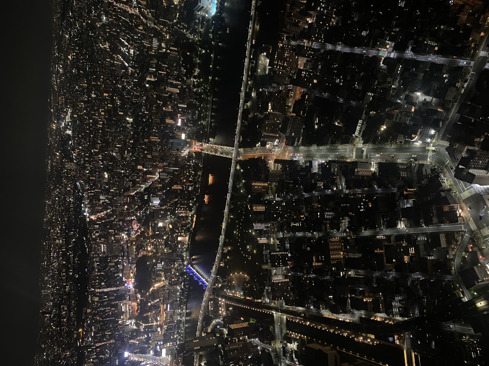
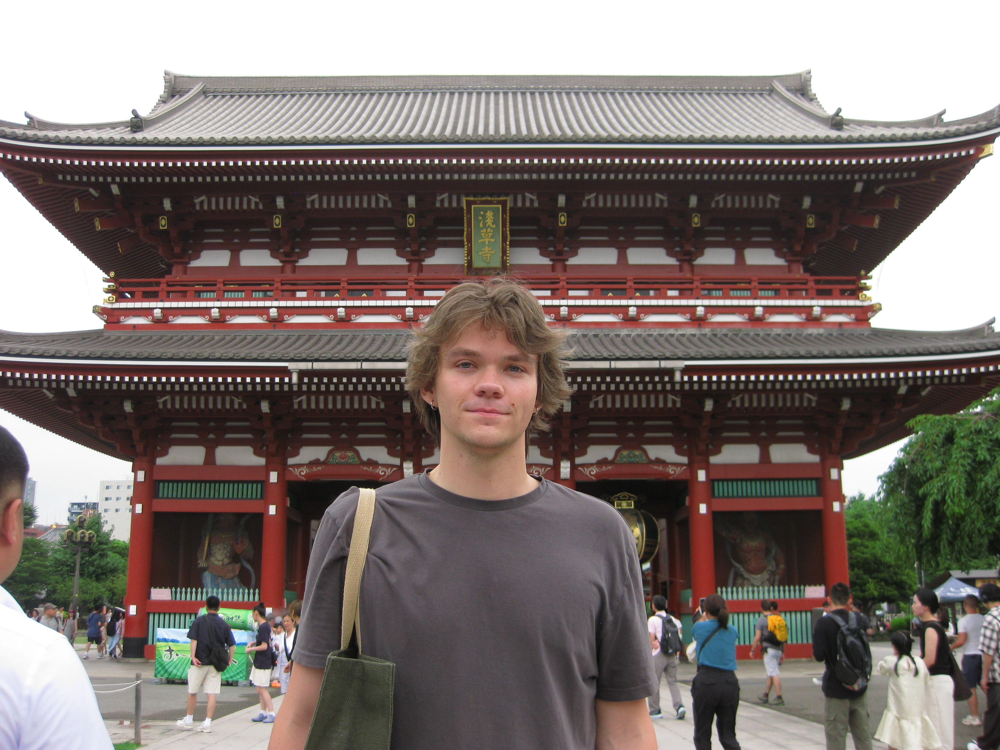
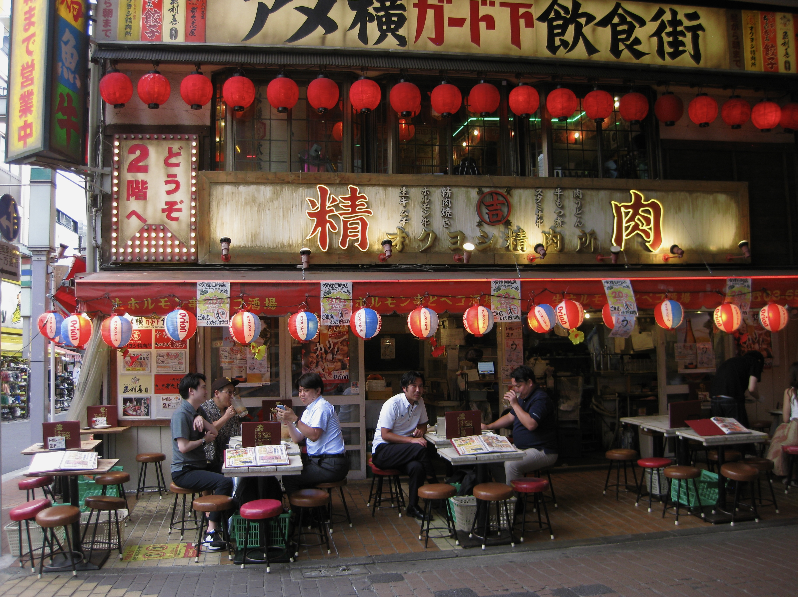
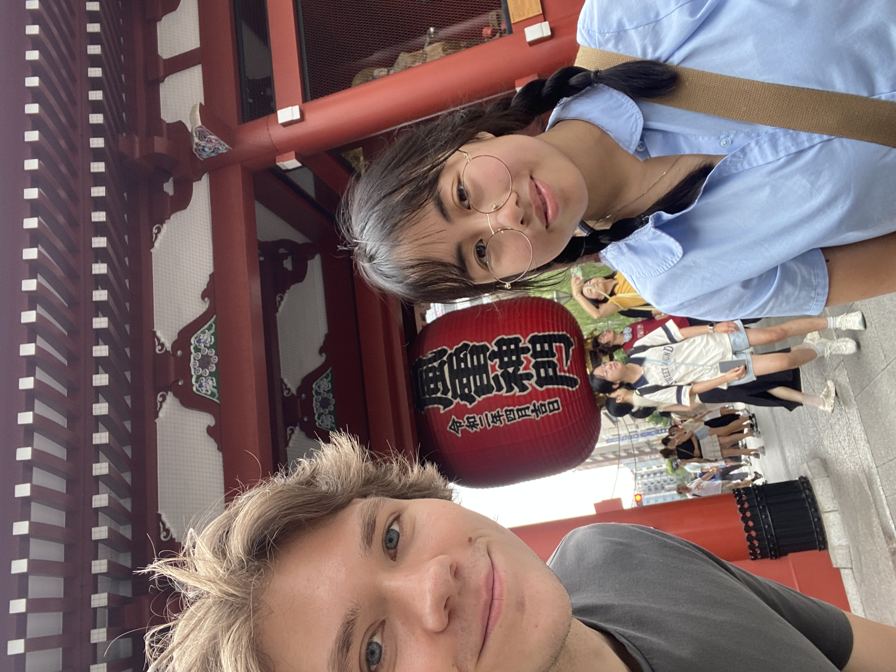

our first day!
i was getting the hang of taking good pictures and had to take this one many times lol

mimi at big temple
the temple looks huge here, this was a super cool place to visit on the first day

the tokyo at night view!
it was fun watching little cars drive by and lights flicker on all over tokyo with you

now me with the temple!
i like how we have the exact same photo of both of us at the same spot lol

shopping street restaurant
a resaurant we saw across the street when we stopped to get a drink after walking through the shopping street for hours

taking a rest
we had to sit because your feet hurt and i got a little drink!

us at the asakusa lantern
finally a picture with us both in it, the lantern was so big!!!

asakusa
awesome architecture